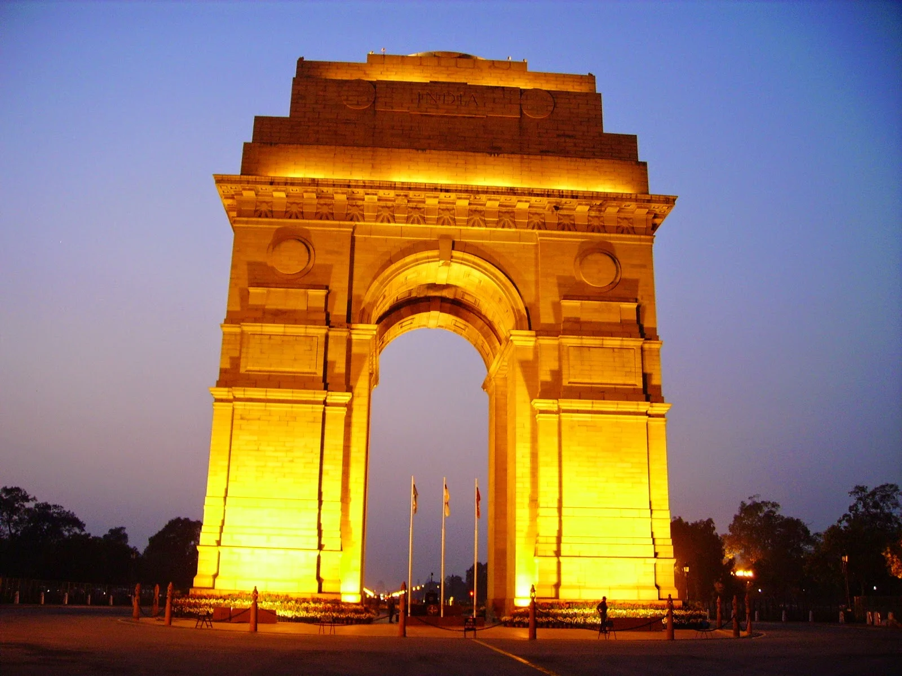
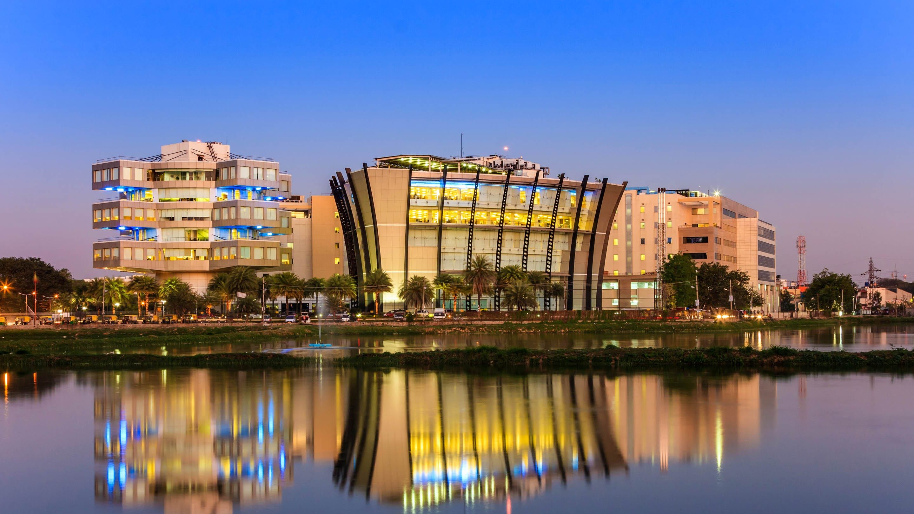
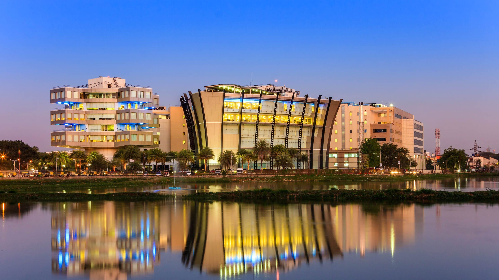
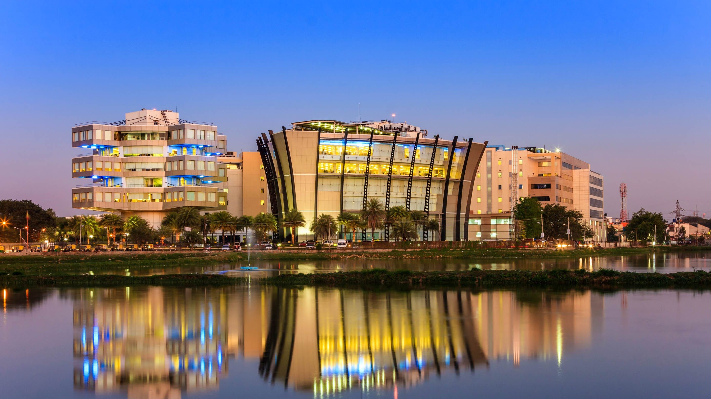

MANALI
Manali is a town, near Kullu town in Kullu district in the Indian state of Himachal Pradesh.
It is situated in the northern end of the Kullu Valley
Manali is a town, near Kullu town in Kullu district in the Indian state of Himachal Pradesh.
It is situated in the northern end of the Kullu Valley



 

DELHI
Delhi, the city that defines India, offers the perfect blend of the country's modern and cultural heritage. This is manifested through the different architectural marvels and museums that capture the rich heritage of India. The India Gate is a famous attraction because of its magnificent structure that brings people in awe.
Delhi, the city that defines India, offers the perfect blend of the country's modern and cultural heritage. This is manifested through the different architectural marvels and museums that capture the rich heritage of India. The India Gate is a famous attraction because of its magnificent structure that brings people in awe.

BANGALORE
the capital and largest city of the Indian state of Karnataka. It has a population of more than 8 million and a metropolitan population of around 11 million, making it the third most populous city and fifth most populous urban agglomeration
the capital and largest city of the Indian state of Karnataka. It has a population of more than 8 million and a metropolitan population of around 11 million, making it the third most populous city and fifth most populous urban agglomeration